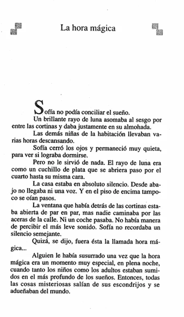
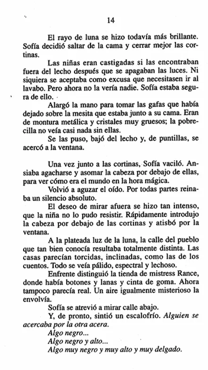

"La hora mágica" — Fragmento inicial (capítulo con el personaje Sofía)
📖 Instrucciones: Lee con atención el fragmento antes de responder. Haz clic en la alternativa que consideres correcta: se marcará en verde si acertaste o en rojo si fallaste (y se mostrará cuál era la correcta).
📄 Páginas del texto

📷 Aquí va la imagen de la página 1 (reemplaza "pagina1.png" por tu archivo)
Página 13

📷 Aquí va la imagen de la página 2 (reemplaza "pagina2.png" por tu archivo)
Página 14
🔍 Comprensión y Análisis
Pregunta 1Comprensión literal
¿Por qué Sofía no lograba conciliar el sueño al comienzo del relato?
A) Porque tenía miedo de la oscuridad.
B) Porque un rayo de luna entraba por la ventana y le daba directamente en la almohada.
C) Porque escuchaba ruidos extraños en el piso de arriba.
D) Porque las demás niñas hacían mucho ruido.
Alternativa B. El relato señala que un rayo de luna se colaba por las cortinas y caía justo sobre su almohada, impidiéndole dormir.
Pregunta 2Inferencia
Según lo que se describe del silencio de la casa y de la calle, ¿qué se puede inferir sobre el momento del relato?
A) Es de día y todos están trabajando fuera de la casa.
B) Es una hora muy avanzada de la noche, cuando todos duermen profundamente.
C) Es temprano en la mañana y la gente recién despierta.
D) Hay una tormenta que mantiene a todos encerrados.
Alternativa B. El silencio absoluto —sin voces, sin pasos, sin coches— y la mención de que "tanto los niños como los adultos" estaban sumidos en el sueño profundo indican que es de madrugada.
Pregunta 3Análisis del personaje
¿Qué actitud demuestra Sofía al decidir mirar por la ventana pese a las reglas y a su temor?
A) Total indiferencia ante lo que pueda pasar.
B) Obediencia estricta a las normas del internado.
C) Curiosidad más fuerte que el miedo o el riesgo de ser castigada.
D) Enojo hacia las demás niñas por dormir tan tranquilas.
Alternativa C. Aunque sabe que podría ser castigada y aunque vacila un momento, el deseo de mirar afuera se hace tan intenso que no logra resistirlo, lo que muestra que su curiosidad supera el miedo.
Pregunta 4Inferencia / anticipación
Al final del fragmento, Sofía distingue una figura negra, alta y muy delgada acercándose por la otra acera. ¿Qué función cumple este momento dentro del relato?
A) Cierra la historia dejando todo resuelto y tranquilo.
B) Introduce un elemento de suspenso o misterio que invita a seguir leyendo.
C) Explica de forma completa quién es esa figura y qué quiere.
D) Demuestra que la "hora mágica" en realidad no existe.
Alternativa B. La aparición repentina de esa silueta funciona como un "gancho narrativo": genera tensión y curiosidad justo cuando el capítulo termina, típico recurso para enganchar al lector con el resto de la historia.
Pregunta 5Análisis descriptivo
Cuando Sofía observa la calle a la luz de la luna, esta le parece distinta a como la conocía: las casas se ven torcidas, pálidas e irreales. ¿Qué recurso literario predomina en esta descripción?
A) Un diálogo entre dos personajes.
B) Una descripción que transforma lo cotidiano en algo extraño e inquietante (ambientación).
C) Un resumen de hechos históricos.
D) Una enumeración de datos científicos sobre la luna.
Alternativa B. El autor usa la descripción del entorno (calles torcidas, casas "como las de los cuentos", aire "misterioso") para crear una atmósfera onírica e inquietante, reforzando la sensación de que algo fuera de lo común está por ocurrir.
📚 Vocabulario en contexto
Vocabulario 1
En el texto se dice que el rayo de luna "asomaba al sesgo" por entre las cortinas. ¿Qué significa "al sesgo" en este contexto?
A) De forma oblicua o inclinada.
B) Con mucha fuerza y velocidad.
C) De manera intermitente, como parpadeando.
D) Completamente vertical.
Alternativa A. "Al sesgo" significa en diagonal o de forma inclinada, describiendo cómo entraba la luz por la ventana.
Vocabulario 2
Sofía se acerca a la ventana "de puntillas". ¿Qué significa esta expresión?
A) Corriendo rápidamente y sin cuidado.
B) Caminando sobre la punta de los pies para no hacer ruido.
C) Gateando por el suelo.
D) Dando saltos pequeños de alegría.
Alternativa B. "Andar de puntillas" significa caminar apoyando solo la punta de los pies, generalmente para moverse en silencio y no ser descubierto.
✍️ Preguntas de Interpretación y Reflexión
Al imprimir o exportar a PDF, solo se incluirá esta sección y las líneas quedarán en blanco.
Nombre:
Fecha:
Pregunta 1Interpretación y pensamiento crítico
Sofía siente miedo y, al mismo tiempo, mucha curiosidad por descubrir lo que ocurre en la "hora mágica",
a pesar de que podría ser castigada si la descubren fuera de la cama. Considerando esta situación,
¿qué harías tú si sintieras esa misma curiosidad por algo prohibido o desconocido? Explica tu respuesta
relacionándola con lo que hace Sofía en el relato.
Lo que yo haría si sintiera esa misma curiosidad por algo prohibido o desconocido,
sería mirar con cuidado y en silencio. Pero antes pensaría si es peligroso o si me pueden
descubrir. Así que probablemente no lo haría.
⚠️ El texto azul de arriba es solo un ejemplo de cómo se ve una respuesta completa. Tu respuesta
NO puede ser igual ni copiar esas frases: debes escribirla con tus propias palabras.
Pregunta 2Interpretación y pensamiento crítico
Al final del fragmento, Sofía ve acercarse por la otra acera una figura negra, alta y muy delgada, y
siente un escalofrío. Considerando esta situación, ¿qué harías tú si estuvieras en el lugar de Sofía
en ese momento? Fundamenta tu respuesta usando algún detalle del ambiente o de la escena que leíste
en el texto.
Yo sentiría mucho miedo al ver esa sombra tan alta
y oscura. Creo que me alejaría de la ventana rápido
para que no me viera, porque el silencio da más miedo.
⚠️ El texto azul de arriba es solo un ejemplo de cómo se ve una respuesta completa. Tu respuesta
NO puede ser igual ni copiar esas frases: debes escribirla con tus propias palabras.